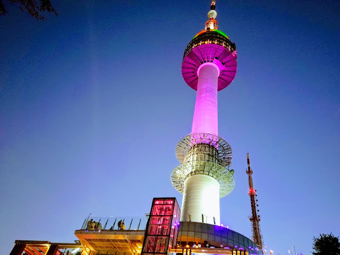

TOURIST SPOT
NAMSAN TOWER
• The N Seoul Tower, officially the YTN Seoul Towe and commonly known as Namsan Tower or Seoul Tower, is a communication and observation tower located on Nam Mountain in central Seoul, South Korea.
• The 236-meter (774 ft)-tall tower marks the second highest point in Seoul and is considered a local landmark.
